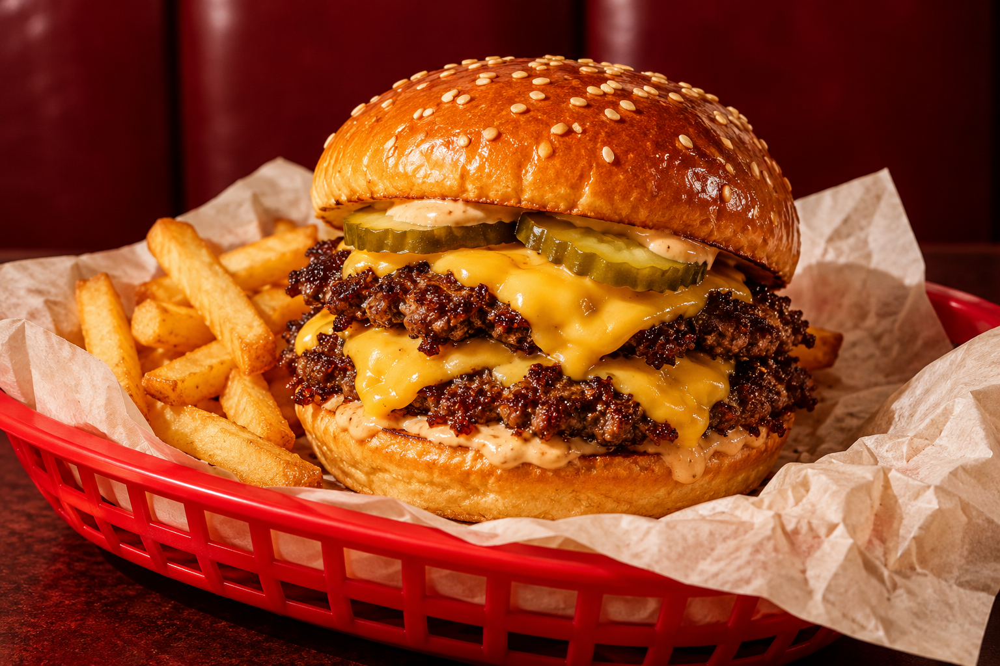

01 THE ORIGINAL
THE DOUBLE
SMASH
$12Two smashed beef patties, American cheese, pickles, diced onion & house sauce. Toasted potato bun.
THE HOUSE FAVOURITEYOUR NEW FAVOURITE BURGER SPOT
Crispy edges. Melty cheese. Both hands required.
Meet your next good decision.

A LITTLE ABOUT THE YARD
The idea is simple: a hot griddle, a short menu, and a burger worth putting your phone down for.
Smash Yard imagines the neighbourhood spot you drop into after work, bring your friends to on Friday, and think about again on Saturday.
MAKE YOURSELF AT HOME
A fictional corner of Raleigh, North Carolina.
No real premises or opening hours.
This is a restaurant website concept by Artyom. Want a simple site for your own business?
EMAIL ARTYOM ↗Project enquiries only · No restaurant bookings